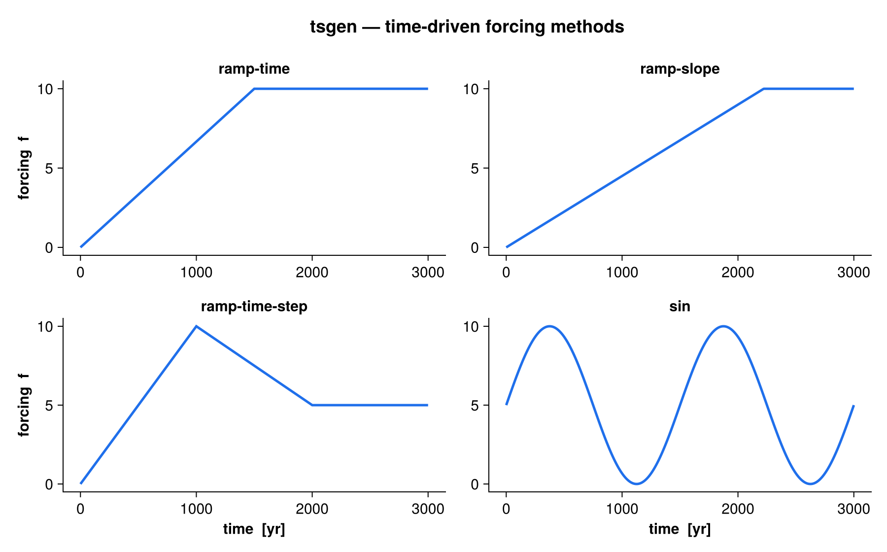
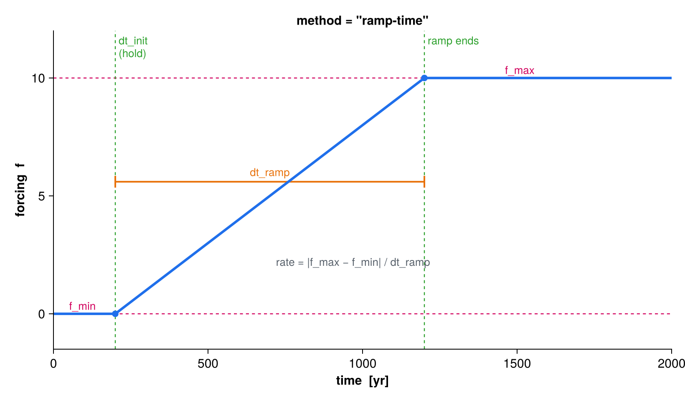
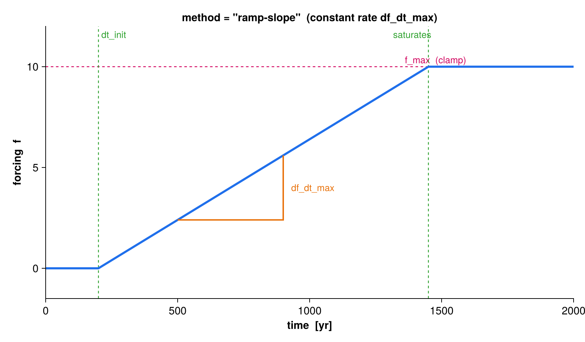
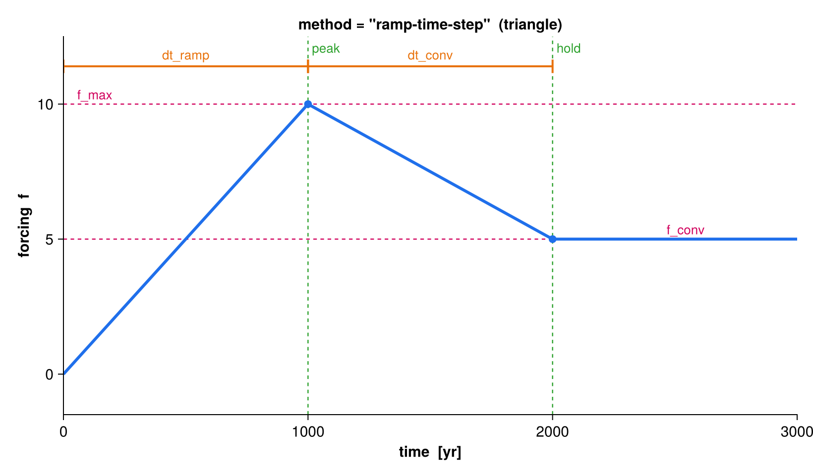
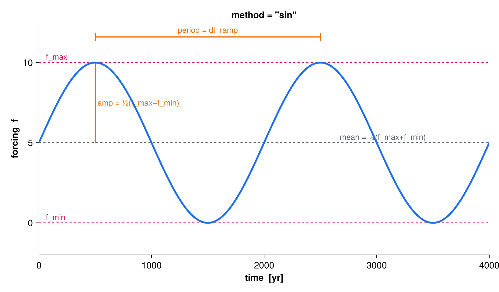
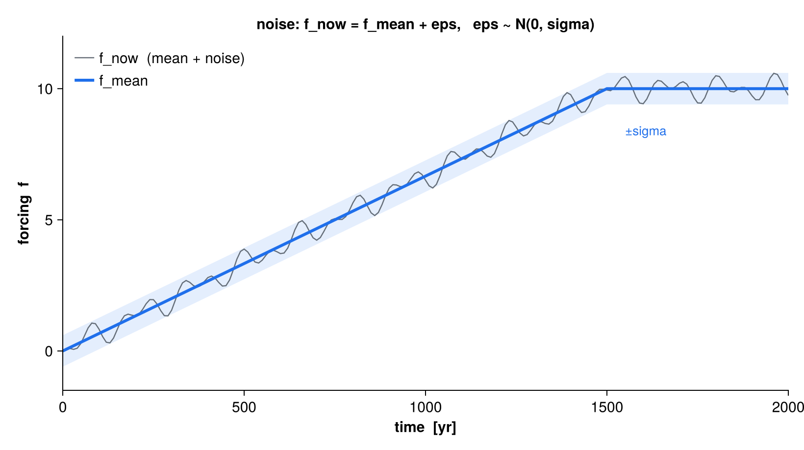

tsgen
Transient scalar forcing driven by time and/or model response
tsgen generates a single transient forcing value f_now at each model timestep. It replaces the former (unbuilt) hyster module and unifies three families of forcing under one namelist-configured interface:
- time-driven — an analytic function of elapsed time (
const,ramp-time,ramp-time-step,ramp-slope,sin); - tabulated — a curve read from file (
series), scalar or multi-channel, via the series module; - response-driven — stateful feedback controllers that adjust the forcing rate from the model’s own response (
exp,PI42,H312b,H312PID,H321PID,PID1).

Quick start
use tsgen
type(tsgen_class) :: ts
real(wp) :: time, var, dvdt
! Read the &tsgen_<label> group from a namelist and set the initial value
call tsgen_init(ts, "forcing.nml", time=0.0_wp, label="climate")
do ! model time loop
! var is the model response tsgen may react to (ignored by time-driven
! methods); dv_dt is optional (finite-differenced from var if omitted)
call tsgen_update(ts, time, var, dv_dt=dvdt)
! ts%f_now is the forcing to apply this step (mean + optional noise)
call apply_forcing(ts%f_now)
if (ts%kill) exit ! optional: stop once the response equilibrates
time = time + dt
end doThe object carries both the mean forcing (ts%f_mean_now), the realized noise sample (ts%eps), and the reported rate of change (ts%df_dt). ts%f_now = ts%f_mean_now + ts%eps.
Public API
| Procedure | Purpose |
|---|---|
tsgen_init(ts, filename, time, [label]) |
Read the namelist group tsgen[_label], classify the method, allocate state, set the initial value at simulation time time. |
tsgen_update(ts, time, var, [dv_dt]) |
Advance to time; compute ts%f_now from the method, the response var, and (optionally) its rate dv_dt. |
tsgen_tabulate(ts, time(:), f(:), [df_dt(:)], [verbose]) |
Sample the forcing over a supplied time axis (analytic and series methods only — feedback methods have no closed form). |
tsgen_write(filename, ts, time(:), f(:), [df_dt(:)]) |
Write a tabulated series to netCDF (time, f, optional df_dt). |
tsgen_class holds the configuration (ts%par), the loaded series (if any), history buffers for feedback/kill, and the runtime outputs listed above.
Time-driven methods
All time-driven methods are closed-form functions of the elapsed time since initialization. A leading initialization window dt_init holds the forcing flat before anything happens; df_sign (+1/−1) sets the ramp direction, and the value is clamped to [f_min, f_max].
ramp-time — linear ramp over a fixed duration
Ramps from the near bound to the far bound over dt_ramp years, then holds. The rate is derived from the duration: rate = |f_max − f_min| / dt_ramp.

ramp-time: the ramp spans dt_ramp years starting after dt_init, reaching f_max.
ramp-slope (and const) — constant rate
Ramps at a fixed rate df_dt_max and clamps at the far bound. const is the same formula (a constant-rate ramp); use df_dt_max = 0 for a truly static forcing.

ramp-slope: a constant slope df_dt_max, clamped at f_max.
ramp-time-step — triangle waveform
Ramps to the first extreme over dt_ramp, then relaxes to the convergence value f_conv over dt_conv, and holds there.

ramp-time-step: peak at f_max after dt_ramp, then down to f_conv over dt_conv.
sin — periodic forcing
A sinusoid oscillating in [f_min, f_max] with period dt_ramp. The amplitude is ½(f_max − f_min) about the mean ½(f_max + f_min). Requires df_sign = +1 (the kill switch is disabled for periodic forcing).

sin: amplitude and mean set by f_min/f_max, period set by dt_ramp.
Noise
When sigma > 0, a Gaussian sample eps ~ N(0, sigma) is drawn each step (Box–Muller) and added on top of the mean: f_now = f_mean + eps. Noise is applied to every method. For a series with a companion standard-deviation variable, the per-time sigma from the file is used instead (falling back to par%sigma where absent).

sigma sets its spread.
Response-driven (feedback) methods
Feedback methods have no analytic form — they adjust the forcing rate from the model’s windowed response derivative dv_dt_ave (averaged over dt_ave), then integrate to update the mean forcing within [f_min, f_max]. They must be stepped online with tsgen_update (passing the response var); tsgen_tabulate rejects them.
exp— exponential rate scaling: the rate collapses toward zero as the response derivative approaches the tolerancetol.PI42,H312b,H312PID,H321PID,PID1— proportional-integral(-derivative) controllers following the adaptive-timestep schemes of Söderlind (2002, 2003) and Cheng et al. (2017, GMD), with the forcing increment playing the role of the timestep. The controller keeps the response derivative neartolwhile respecting the rate capdf_dt_max.
The kill switch (with_kill = .TRUE.) stops the run once the response has equilibrated (|dv_dt_ave| < tol) at the target bound; ts%kill is then set .TRUE. for the caller to act on.
Tabulated series method
method = "series" reads a curve from file (ASCII or netCDF, auto-detected by extension) through the series module and interpolates it on the file’s own absolute time axis. Only method, sigma, and the series_* keys are consulted. A multi-channel series (e.g. 12 monthly values) reports the channel mean in ts%f_now, with per-channel values in ts%vec%f_now(:).
Namelist configuration
Parameters are read from the group tsgen (or tsgen_<label> when a label is passed to tsgen_init). Only the keys relevant to the chosen method are read.
&tsgen_climate
method = "ramp-time" ! const | ramp-time | ramp-time-step | ramp-slope
! | sin | series | exp | PI42 | H312b | H312PID
! | H321PID | PID1
with_kill = .FALSE. ! stop once the response equilibrates at a bound
sigma = 0.0 ! stddev of the additive Gaussian noise [f]
df_sign = 1.0 ! ramp direction, +1 or -1 (sin requires +1)
f_min = 0.0 ! lower forcing bound
f_max = 10.0 ! upper forcing bound
f_conv = 5.0 ! convergence value (ramp-time-step)
dt_init = 0.0 ! initialization hold before forcing starts [yr]
dt_ramp = 1000.0 ! ramp duration; also the period for method="sin" [yr]
dt_conv = 1000.0 ! relaxation duration (ramp-time-step) [yr]
dt_ave = 200.0 ! response-averaging window (feedback/kill) [yr]
df_dt_max = 0.01 ! max/constant forcing rate [f/yr]
tol = 1.0e-4 ! feedback convergence tolerance on |dv_dt_ave|
/For a tabulated series, replace the ramp/feedback keys with the file location:
&tsgen_climate
method = "series"
sigma = 0.0
series_file = "input/co2.nc" ! .nc/.nc4/.cdf -> netCDF, else ASCII
series_var = "co2" ! (netCDF only) value variable
series_time_name = "time" ! (netCDF only) time coordinate
/The feedback-convergence tolerance was renamed eps → tol (v1.2+). The name eps now denotes the realized noise sample. Existing tsgen namelists must rename their eps key to tol.
Tabulating and writing a series
For validation or offline output, sample an analytic/series forcing over a time axis and write it to netCDF:
real(wp) :: time(2001), f(2001), dfdt(2001)
integer :: i
do i = 1, size(time)
time(i) = real(i-1, wp) ! 0 .. 2000 yr
end do
call tsgen_init(ts, "forcing.nml", time=0.0_wp, label="climate")
call tsgen_tabulate(ts, time, f, df_dt=dfdt, verbose=.TRUE.)
call tsgen_write("forcing_out.nc", ts, time, f, dfdt)Reproducing the figures
The annotated figures on this page are generated by docs/figures/make_figures.jl, which re-implements the analytic eval_open formulas from src/tsgen.f90 for illustration. Regenerate them with:
cd docs/figures
julia --project=. make_figures.jlSee also
series · nml · ncio · root_finder